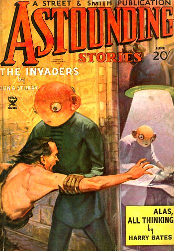
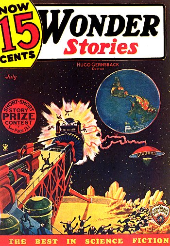
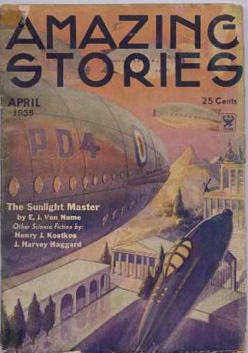

Couverture de Astounding Stories n° 4, vol. 5 de juin Street & Smith publications < Collection Les Treece-Sainclair < UFOPOP

Couverture de Wonder Stories n° 68 de juillet Continental publications < Collection Les Treece-Sainclair < UFOPOP

Visible de Addis Abebba (Ethiopie), éclipse considérée comme un signe de guerre et de
calamités Martini: Paris Match, 23 octobre 1954.
"Steersman on Pilot Boat Dazzled and the Boat Shaken as Fireball Hits Water", Popular
Astronomy, janvier 1935, vol. 43, n°1, pp. 69-70.
Couverture de Amazing Stories ce mois-là

A Fontainebleau (Seine-et-Marne), M. E. van Ameyden van Duyn
observe en compagnie de Madame sans Gêne et d'autres témoins un météore "De Vurrbol Langs Den Hemel", Het
Vaderland (Pays Bas), édition du matin, 11 août 1935.
À Addis Abebba (Ethiopie), alors que les troupes italiennes viennent d'envahir le
pays, l'africaniste Pierre Ichac se trouve dans la ville qui s'attend à être bombardée. Un jour, alors qu'il se
promène, il voit à un carrefour une foule regardant en l'air et montrant quelque chose dans le ciel limpide :
une sorte de "disque" brillant de couleur "argentée" et parfaitement immobile. Ichac a son appareil
photographique, mais l'objet était vraiment trop petit pour réussir un bon cliché, et il préfère fixer l'image
de la foule. Le "disque" reste plusieurs minutes sans le moindre mouvement. Les éthiopiens croient à un avion
italien, mais découragés de ne pas voir les ombres tomber, détournent les yeux du phénomène. Alors que Ichac
fait de même, l'objet disparaît Bougard, Michel: La
chronique des ovnis, 1977L'illustration n° 4841, p. 481, 14 décembre 1935 < Durrant,
H.: Le livre noir des soucoupes volantes, 1978, p. 75. D'autres sources Cartier, Raymond: Paris Match, 23 octobre 1954, p. 18 indiquent que le
"disque" brilla au-dessus d'un Bordj saharien durant 3 jours. On apprendra plus tard qu'il s'agissait de Vénus, particulièrement brillante à ce moment.
Bulletin de la Société Astronomique de France, janvier 1936.
Près de Hermosilla (Mexique), un avion en route
vers Los Angeles observe un corps aériens aux couleurs rouges et vertes changeantes "Mexican Plane Sights
Colorful Aerial Body", Times de Los Angeles, 27 octobre 1935.
A Toten (Norvège), manifestation de poltergeists Bord/Bord: Modern
mysteries of the world, 1989, 346.
{kind=link}
{kind=link}